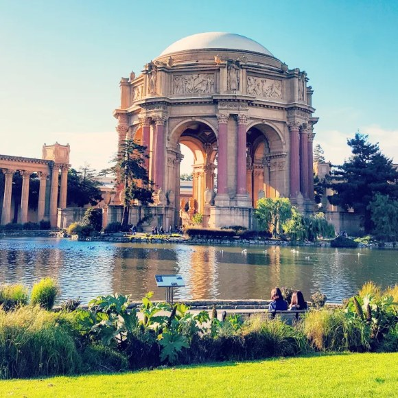
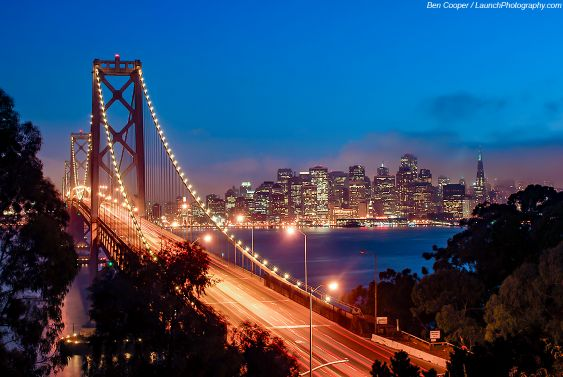

Welcome to BayPulse
Discover new information about the Bay Area. Explore its history, landmarks, famous companies and more. Find something that interests you and visit the famous San Francisco.



You Might Know San Francisco
For it landmarks such as the Golden Gate Bridge or Alcatraz Island. Also for its colleges that include UC Berkeley and Stanford University.
Learn moreDiscover San Francisco
San Francisco is a city known for its diverse neighborhoods, historic landmarks, innovative companies, and unique culture. From the Gold Rush to today's technology industry, the city has played an important role in American history.
Learn more